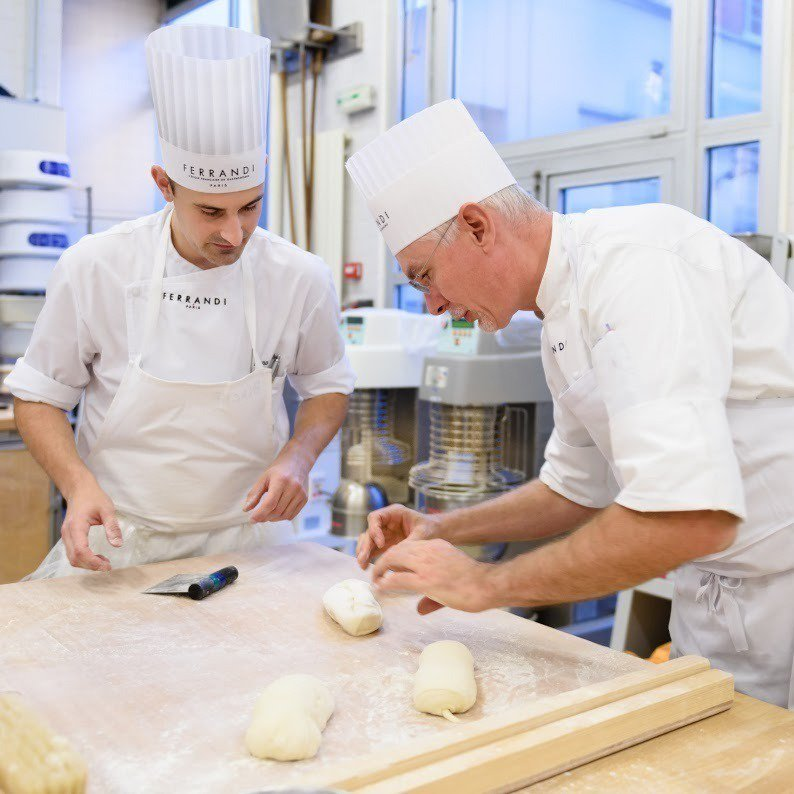
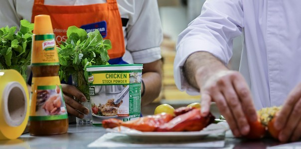

Who are we?
We are a group of professional chefs who dedicated their lives and efforts into teaching the art of cooking. Since 2015 we have been making this world a better place by teaching individuals how to cook great food of all types, we developed a fun interactive classes which combines theoretical learning, practical application and a lot of fun and laughs. Our chefs will provide you with the most fun learning experience you will ever have in your whole life!

We're all about quality!
Our professional foodservice products are developed with the close involvement of our Chefs. So, it’s no surprise that our leading foodservice brands deliver quality without compromise in the kitchen.
With our innovative, professional ingredients you can save precious prep time whilst serving delicious food that makes a profit.
Meet our chefs!
Lucas Siwinski

Lucas Siwinski started out studying pastry, chocolate and ice cream-making here at FERRANDI Paris in 2004 before going on to working in several patisseries around Paris, including Gérard Mulot’s Maison Mulot. He then went to travel the world, first working in several prestigious clubs in Australia, before moving on to South America.
Elsa Pierret
Ambitious, full of ideas for future projects, Elsa Pierret graduated from her Bachelor’s in Management from Texas in 2014. Over the course of the following three years, she undertook her professional internships in smaller institutions such as Le Meurice or the Michelin-starred restaurant Auréole in New Yorks.
Stevy Antoine
For asian dishes Stevy Antoine is the man, it all clicked during an internship in his third year of school with a Korean food chef in Seul. He decided from that moment on, that he would take a course for two years to learn the art of cooking asian food. Never put off by demanding hours, often reaching 10 hours a day. He is ready to teach asian food magic.
© 2019, Cutting Edge Cooking School.
All Rights Reserved